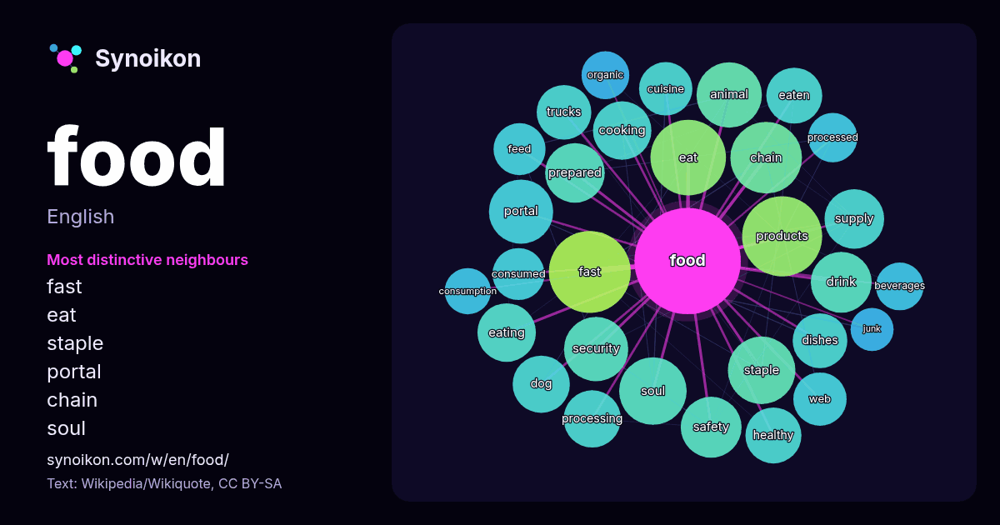

English · popular word
food
The words found around it in 2051 instances from Wikipedia, Wikiquote, Hacker News.

Most distinctive neighbours
- fast 36×
- eat 36×
- staple 31×
- portal 27×
- chain 25×
- soul 25×
- cooking 22×
- drink 22×
- eating 22×
- eaten 21×
- healthy 20×
- prepared 20×
- products 19×
- processing 19×
- cuisine 19×
- dishes 19×
- consumed 18×
- processed 17×
- safety 17×
- trucks 16×
× = how many times more often than in general Wikipedia text.
Most frequent neighbours
- fast 47
- products 45
- eat 40
- human 38
- chain 36
- system 36
- american 34
- soul 32
- staple 32
- world 31
- animal 30
- type 30
- industry 29
- portal 29
- security 29
- street 29
- company 27
- drink 26
- production 26
- safety 26
In context
- Food is any substance that is consumed by an organism for nutritional support. Food usually consists of plant, animal, or fungal origin and contains essential Wikipedia snippets · Food
- FOOD was an artist-run restaurant in SoHo, Manhattan, New York. FOOD was founded by artists Carol Goodden, Tina Girouard and Gordon Matta-Clark. FOOD Wikipedia snippets · FOOD (New York City restaurant)
- Office of Food for Peace (FFP) working with the UN World Food Programme, the NGO Oxfam Intermón and ACDI/VOCA. The United Nations' World Food Programme Wikipedia snippets · Burkina Faso
- Wales and the English Midlands. Faggots originated as a traditional cheap food consumed by country people in Western England, particularly west Wiltshire Wikipedia snippets · Faggot (food)
- Fast food is a type of mass-produced food designed for commercial resale, with a strong priority placed on speed of service. Fast food is a commercial Wikipedia snippets · Fast food
- strategies to obtain food or feed on a variety of food items are called generalists, while others that concentrate time and effort on specific food items or have Wikipedia snippets · Bird
- Soul food is a type of cuisine. Soul Food may also refer to: Soul Food (film), a 1997 American comedy-drama Wikipedia snippets · Soul Food
- Comfort food is food that provides the eater a nostalgic or sentimental value and may be characterized by its satisfying heartiness and association with Wikipedia snippets · Comfort food
More words
- art
- autumn
- bell
- bread
- bridge
- cat
- city
- climate
- clock
- death
- desert
- dog
- family
- forest
- garden
- god
- gold
- health
- heart
- history
- honey
- horse
- island
- language
- life
- map
- mirror
- money
- mother
- mountain
- nature
- power
- rain
- road
- salt
- science
- shadow
- silence
- song
- star
- storm
- summer
- tea
- time
- train
- truth
- water
- winter
- work
Precomputed on 2026-10-09 with default settings (±5 words, medium corpus). The interactive map can refresh it with live data.